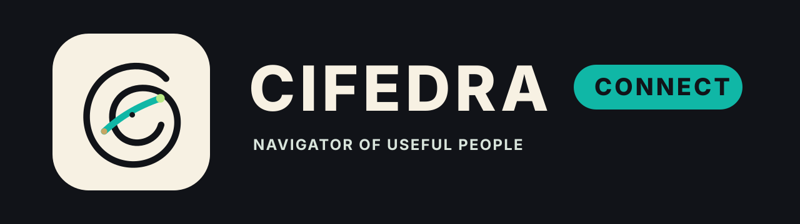
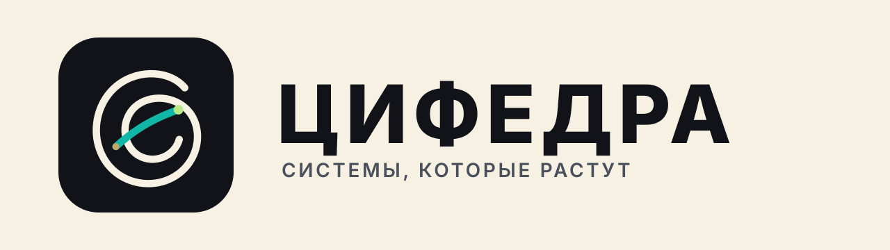

Задача
Понять, какой человек нужен и для какого результата.

Помогает найти нужного человека для задачи, подготовить разговор и довести контакт до результата.

Понять, какой человек нужен и для какого результата.
Найти релевантный контакт и увидеть контекст.
Подготовить цель, тезисы, вопросы и следующий шаг.
Зафиксировать итог контакта и движение задачи.
Ручная петля сохраняет энергию референса: движение, путь, контактный маршрут.
Акцентная траектория показывает поиск человека, подготовку разговора и результат.
Палитра и типографика рассчитаны на карты контактов, подготовку встреч и трекинг итогов.